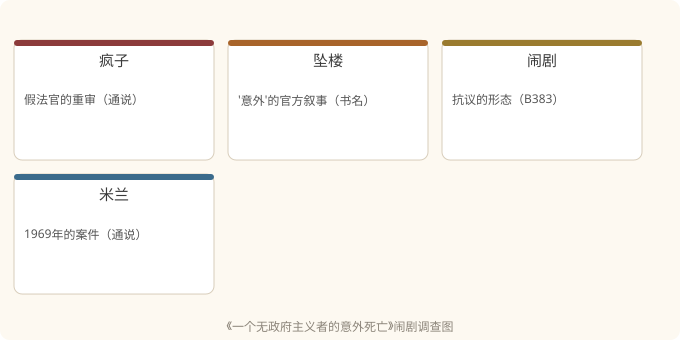

一个无政府主义者的意外死亡
一、基本信息
| 作者 | 达里奥·福 |
|---|---|
| 成书/出版 | 1970年（Britannica B383：Morte accidentale di un anarchico (1970)——最受欢迎剧作之列） Dario Fo — Encyclopaedia Britannica（百科全书） |
| 国别/地区 | 意大利 |
| 时代 | 现当代 · 20世纪70年代初 |
| 体裁 | 戏剧 |
| 语言 | 意大利语 |

《一个无政府主义者的意外死亡》闹剧调查图（主题·结构图）
二、创作背景
Britannica（B383）：最受欢迎剧作之列（'listed among his most popular plays'）。
Britannica（B383）：福——遭'government censure as a theatrical caricaturist with a flair for social agitation'。
题材（通说待核）：1969年米兰炸案与'坠楼'的无政府主义者皮内利——疯子警探的'调查'（真相取材于真实案件说通说待核）。
三、内容脉络
（通说待核）'疯子'冒充法官重审'意外死亡'案。
（通说待核）警方的谎言与'第N次坠楼'。
四、主要人物表
| 人物 | 身份 | 说明 |
|---|---|---|
| 疯子（Il Matto） | 假法官 | （通说待核，B383未载） |
| 警长 | 体制的口舌 | （通说待核） |
五、主题与艺术特点
- '意外死亡'的官方叙事（书名语境——通说待核）。
- 闹剧的抗议（B383：social agitation）。
- commedia dell'arte 的当代变身（B383）。
六、影响与评论
- Britannica：'listed among his most popular plays'（B383）。
Dario Fo — Encyclopaedia Britannica（百科全书） - Britannica：1997诺奖（B383 交叉）。
Dario Fo — Encyclopaedia Britannica（百科全书）
七、阅读建议
难点
- 真实案件底本（皮内利案说——通说待核）。
- 闹剧节奏与即兴。
- 《一个无政府主义者的意外死亡》中译本（人民文学等——通说待核）。
- 意大利文原版。
达里奥·福首选；与《滑稽神秘剧》对读。
八、待核实
- 皮内利案（1969 Piazza Fontana案说）细节待核。
- 1970年首演细节待核。
- '疯子'角色细节待核。
本页主要来源
达里奥·福的其他收录作品：一个无政府主义者的意外死亡滑稽神秘剧